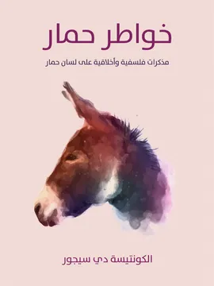

خواطر حمار: مذكرات فلسفية وأخلاقية على لسان حمار

قراءة عربية أصلية محددة النطاق في الصفحات 15، 16 من ملف PDF المرتبط، وليست تلخيصا كاملا للكتاب. نناقش ما تدعمه هذه المقاطع فقط.
سوق يوم الثلاثاء
يفتح الحمار فصله الأول «السوق»، بترجمة حسني الجمل، مخاطبًا سيده الصغير: مادام الناس لا يعرفون كل ما يعرفه حمار عالم، فإنكم يا من تقرءون هذا الكتاب تجهلون بلا شك ما هو معروف لكل رفقائي الحمير؛ من أنه يُقام في كل يوم ثلاثاء سوق في مدينة «ليجل»، تُباع فيها الخضار والزبدة والبيض والجبن والفواكه وأشياء أخرى فاخرة. وكان ذلك اليوم يوم شقاء لرفقائي المساكين، وكان لي كذلك أيضًا قبل أن تشتريني سيدتي الكبيرة جدتك الكريمة التي أعيش الآن عندها؛ فقد كنت مملوكًا لفلاحة شرسة قاسية. تصور يا سيدي الصغير كيف أنها كانت تبالغ في القسوة حين تجمع كل البيض الذي يبيضه ما عندها من الدجاج، وكل ما يتجمع عندها من الزبدة والجبن المستخرج من لبن ما تملك من البقر، وكل ما ينضج أثناء الأسبوع من الخضر والفاكهة، ثم تملأ بكل ذلك سلالًا تضعها فوق ظهري، فإذا تم لها ذلك وكنت محملًا بالأثقال في حالة لا أستطيع معها التحرك، جاءت هذه المرأة الثقيلة وجلست أيضًا فوق السلال، ثم تسوقني بغلظة وعنف إلى السوق وبينه وبين منزلها مسافة فرسخ.
زاوية وحدود القراءة
قراءة في مطلع الفصل الأول بترجمة حسني الجمل (ص 15-16 من الملف)، ولا تدعي تتبع مذكرات الحمار في بقية الفصول.
الطبعة والقراءة
هذه النسخة من الكتاب صادرة ومتاحة مجانًا من مؤسسة هنداوي بشكل قانوني؛ حيث إن نص الكتاب يقع في نطاق الملكية العامة تبعًا لقوانين الملكية الفكرية.
تنزيل PDF المجاني ↓ القراءة والمصدر الرسمي ↗